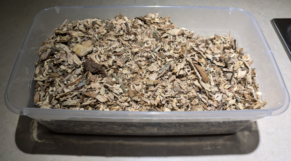
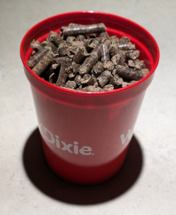
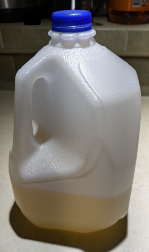
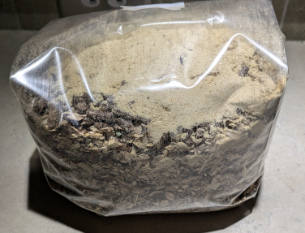
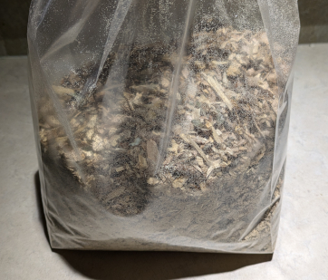
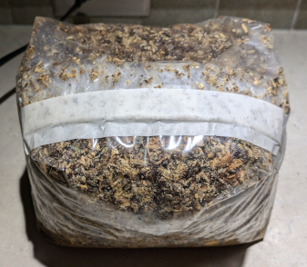

Example of Real World Use
The calculator works on a combination of simple equations pertaining to each ingredient. A check of the math will prove its efficacy, but its true value is proven in its real-world application. In this section, I will present a simple example of how the figures listed by the calculator are applied to create a substrate.
Storing your ingredientsTo reduce the amount of moisture absorbed by your ingredients from the surrounding environment, materials used for making substrates should be stored in containers that are as airtight as possible. Materials left out in the open air will inevitably absorb moisture from its surroundings, skewing your MC tests and making them unreliable. Keeping materials in closed containers will also help to reduce the number of MC tests you have to perform. Materials kept in a closed container for an extended period of time will balance out the moisture already contained within the container by passing it from wetter areas to drier areas, making your MC tests more reliable. For example, a pile of sawdust or bale of straw left outdoors where it will be exposed to the elements will see a dramatic rise and fall in moisture content due to rain, humidity, and drought. That same material stored in an airtight 5 gallon bucket will maintain a constant moiture content without any significant changes over a long period of time. |
There will be three ingredients used in this example substrate, as shown in the photo above: wood chips (rear), HWFP (left), and rice bran (right).
I want to create a substrate with the following ratio and weights:
| % | g | |
| Total sub weight | --- | 3000g |
| Water | 60% | 1800g |
| Wood chips | 20% | 600g |
| HWFP | 15% | 450g |
| Rice bran | 5% | 150g |

Wood chips
The wood chips used in this example come from my property. It is a mix of red oak, pecan, and a branch or two of chinaberry. The branches were stripped of any leaves and any twigs smaller than the thickness of my index finger before being fed through a cheap wood chipper. The chips were collected and laid out in the sun to dry for a few days, after which they were collected again and stored in a 5 gallon bucket for a week before use. This week-long "rest" is intended to help balance out any significant moisture differences in the bucket before performing an MC test. This is an important task when working with raw materials such as wood chips.

HWFP
HWFP (hardwood fuel pellets) are a staple in wood-based substrates. Typically fuel pellets used for heating are used for substrates, but cooking pellets are just as good, albeit a bit more expensive. The pellets used in this example are made of oak, though the label doesn't specify the exact species. Be aware that many heating fuel pellets may contain or be primarily made of softwood such as pine or cypress. Some mushroom species can grow perfectly fine on this kind of wood, but other species have difficulty. When picking fuel pellets, look for those made from hardwoods. Usually I omit HWFP from MC tests as long as they are still stiff and offer a decent amount of resistance when attempting to break in half. This is a personal litmus test and not a definitive indicator of moisture content. On average, HWFP contain a moisture content of around 1-5%, which is enough water to throw your target moisture content off by a percentage or two. This is a perfectly reasonable margin of error, in my personal opinion. With that said, my decision to omit HWFP from MC tests is entirely personal.

Rice bran
Rice bran (and other brans) are used as a nutritious additive to improve colonization, fruiting yeilds, and fruit quality. This is due to the increase of nitrogen and starch provided by the bran, which are essential for protein and energy production and many important mycelial cellular functions. There are many different types of supplements that can be added to substrates to provide a boost in overall nutrition, such as bran, manure, coffee grounds, and seed hulls. Grain can be used as a supplement as well, but it is more efficient to add grain only as colonized spawn. This will not only boost the nitrogen in the substrate, but it will also reduce the colonization time by providing the mycelium more "jumping off" points and reduce the risk of contamination. It's the epitome of killing two birds with one stone. The availability of supplements to you may be different than they are for me. Rice bran is the cheapest option available to me. An MC test should always be performed on bran of any kind. Even at such a small ratio (5% in this example), there may be enough water contained in it that it can cause the substrate to be too moist.

Water
Water is perhaps the most important ingredient in a substrate. Too much or too little will become a primary factor in the substrate's failure. It is crucial that the appropriate amount of water is added. It is because of its importance in substrate composition that this calculator was created. Many people recommend using distilled water for substrates since it is pH neutral and free of any chemicals that may harm or stunt mycelium. The water used in this example is well water from my property. The water was tested some years ago, and I doubt the mineral profile has changed by much. There are trace amounts of calcium, potassium, and sulfur, all of which are trace minerals used by the mycelium. The pH of the water is also neutral. I also included about 10mL of oat soak water that was drained from some oats used in spawn production (this is the cause for the yellow color of the water). This is a personal choice that may or may not have any effect on the substrate's overall quality. I recognize it as a bias I have, as I'm sure the quality of my crops would not be negatively affected if I omitted this addition. It's like wearing your lucky Boston Red Sox jersey while watching the World Series. You feel like it helps.
The first task to be completed is performing MC tests on all ingredients. As stated above, the HWFP will be omitted from the test. Here are the results after testing the wood chips and rice bran:
| Dry weight needed (g) | MC (%) | MC (g) | Wet weight needed (g) | |
| Wood chips | 600g | 16% | 114.286g | 714.286g |
| Rice bran | 150g | 9% | 14.835g | 164.835g |
As expected, there was a high water content in the wood chips. Since there is 16g of water in every 100g of wood chips, 600g of chips would actually be 96g water and 504g wood. The target dry weight is 600g. If you weigh out 600g of these wood chips, you would be 96g short of your target. 96g of water is not an insignificant amount. This will significantly increase the moisture content of the entire substrate while reducing the overall weight of the dry ingredients. This is the primary reason MC tests are important. Once the MC% has been plugged into the calculator, it outputs the actual weight of the wood chips that you should weigh out so that you have 600g of wood. The remaining weight is water, which is deducted from the 1800g of water called for by the recipe.
After weighing out the ingredients, they are ready to be mixed together. The images in this section have already been weighed out for this substrate.

Ingredients added to filter bag

Ingredients shaken to mix

Water added and bag taped. Ready for sterilization
After the water has been added and mixed, the bag is folded and taped to protect the filter during sterilization. If using a pressure cooker to sterilize, you can keep the tape on the bag after sterilization until you're ready to spawn. If tyndallizing your substrate, remove the tape and unfold the bag after each steaming session before it cools as the adhesive will be soft while it's warm. This allows for proper gas exchange which is crucial for the tyndallization process.
Although lime pasteurization has a section on the calculator, I didn't include it in this example. This is because lime pasteurization would not be an effective treatment for this block. This is solely due to the addition of the rice bran. As mentioned above, the rice bran is very nutritious and attractive to contaminants and may harbor endospores that are resistant to pastuerization (both heat and chemical methods) as well as boiling water. The substrate would have to be sterilized by pressure and steam or tyndallized to destroy all living organisms and endospores.
And that's it. On paper, it seems a little complicated, but when put into practice, it's pretty straightforward and easy.